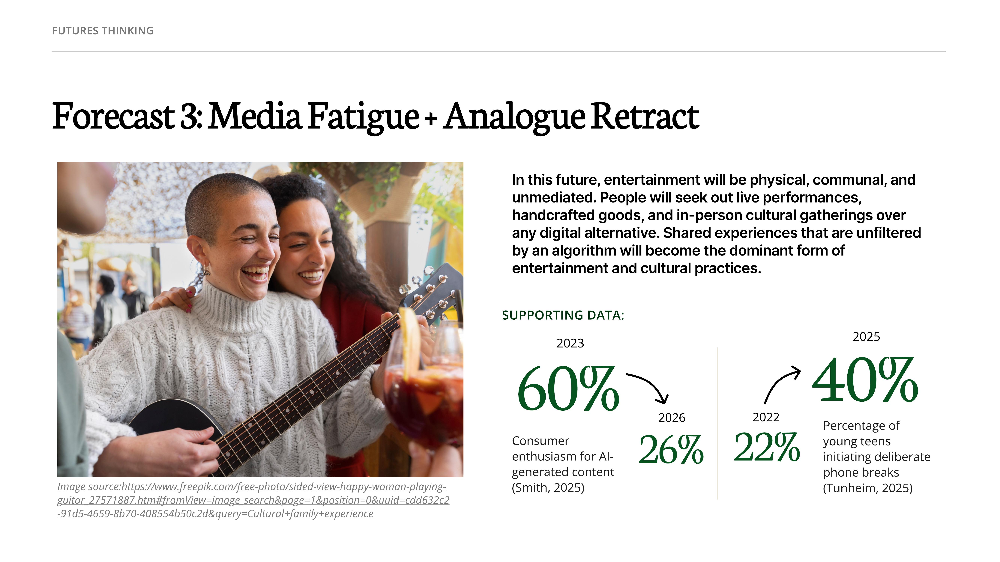
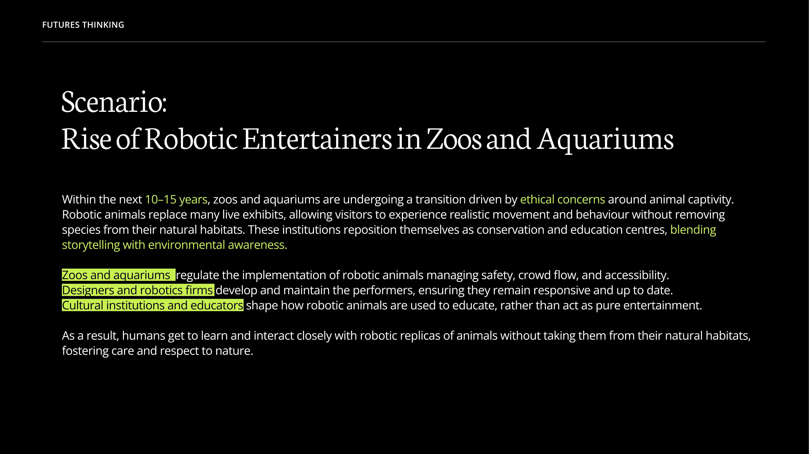
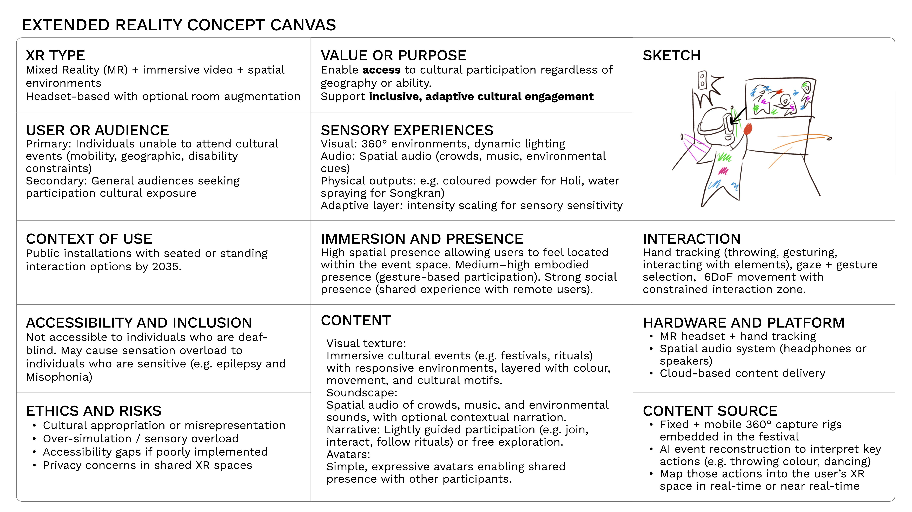
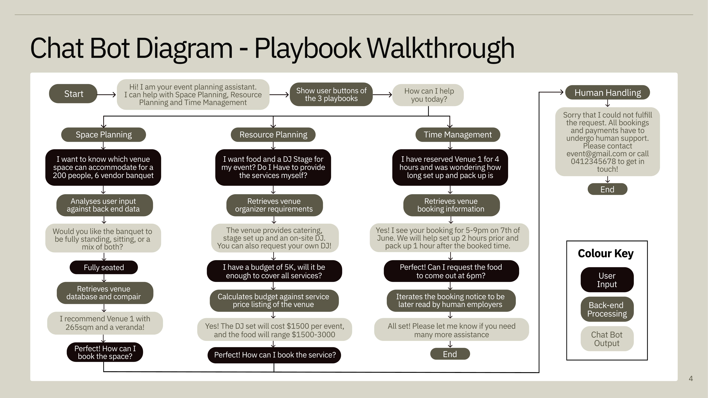

Advanced Interface Prototyping · 2026
UX designer interested in how technology can create meaningful and accessible experiences for diverse communities.
About
I approach design by first understanding the people, contexts, and challenges that shape a problem space before proposing solutions. Rather than focusing solely on technology, I value research, collaboration, and iterative design as tools for uncovering insights and creating experiences that genuinely respond to user needs.
Throughout this semester, I worked across projects exploring emerging technologies, extended reality, and conversational AI. These experiences strengthened my understanding of research-driven design, collaborative problem solving, and the importance of continually refining ideas through feedback and testing.
All three projects explored different aspects of entertainment and culture: through futures thinking, emerging immersive technologies, and conversational AI design.


One of the most valuable lessons I learned from this project was how differently people understand the same problem space. Every team member brought knowledge from different sources, interests, and experiences. While I was familiar with some aspects of AI-driven entertainment, other team members introduced examples and perspectives that I had never encountered before.
This experience highlighted why collaboration is so important in UX design. No individual researcher can fully understand a complex problem space alone. Through discussion, sharing research, and challenging assumptions, teams can build a broader and more informed understanding of users and emerging opportunities. Moving forward, I see collaborative research and knowledge sharing as essential parts of effective UX practice.

This project challenged me to think about the design of non-screen technologies and the importance of defining users clearly. Our concept explored how Mixed Reality could allow people to participate in cultural events they could not physically attend, whether due to mobility, geography, or disability constraints.
Feedback on the concept encouraged us to think more carefully about who the system was designed for and what specific cultural experiences it would support. Initially, the proposal attempted to address a broad audience, but I realised that future-focused concepts can quickly become unrealistic when they are not grounded in the needs of a clearly defined user group.
This taught me that successful design begins with understanding a specific audience rather than designing for everyone. In future projects, I would narrow the target audience earlier in the design process so that design decisions, accessibility strategies, and technological choices can be developed around real user needs rather than general assumptions.

Initially, our team designed the chatbot with a concise and highly professional tone. We wanted interactions to be efficient and direct, particularly when helping users plan events.
However, through testing and role-playing different user scenarios, we discovered that the chatbot felt distant and unapproachable, especially for users who had little experience organising events. While the information was accurate, the experience lacked warmth and encouragement.
In response, I adjusted the conversational tone to feel more welcoming and supportive. Small changes such as conversational language, emojis, and expressive written cues helped make interactions feel more approachable while still maintaining clarity and professionalism.
This experience demonstrated that UX design is not only about functionality but also about how users feel during an interaction. Iterative prototyping allowed us to identify issues that were not obvious during initial design and refine the experience based on user needs.
AI Reflection & Declaration
Throughout this semester, I used ChatGPT and Google AI across research, ideation, and documentation. Through these experiences, I found that the value of AI in design exists on a spectrum. The further AI moves from supporting the design process towards making decisions for the designer, the more cautious we need to be about its role.
Through these projects, I developed a stronger understanding that AI is most useful when it supports the design process rather than directing it. The most successful outcomes occurred when AI was used to accelerate research and exploration, while collaboration, user feedback, and critical reflection guided decision making. As I continue developing as a UX designer, I intend to use AI as a tool that expands opportunities for learning and creativity without allowing it to replace the human-centred thinking that sits at the core of UX design.
Looking ahead
This semester reinforced that UX design is fundamentally about understanding people. Whether conducting futures research, designing immersive technologies, or developing conversational interfaces, effective design depends on listening to users, collaborating with others, and continually refining ideas through feedback. As I continue developing as a UX designer, I aim to strengthen my research, prototyping, and accessibility skills while maintaining a human-centred approach to emerging technologies.